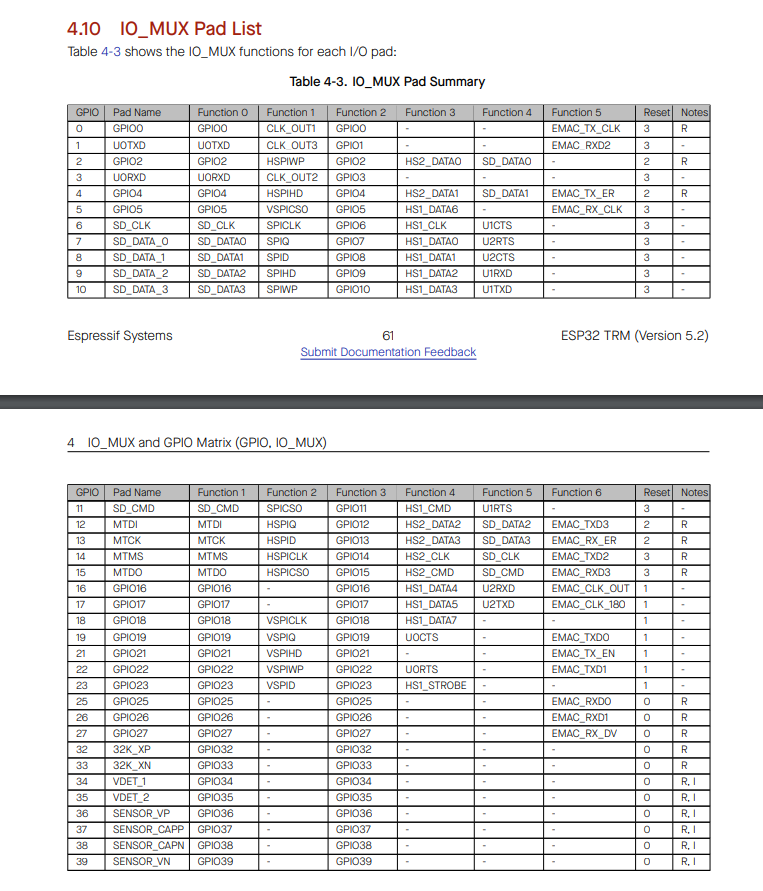

SPI
SPI¶
- One master, several slaves
-
4 pins
-
MISO ：Master In / Slave Out
- MOSI ：Master Out / Slave In
- SCLK ：Serial Clock
- SS ： Slave Select
- SS pulls to ground means active slave’s MISO and MOSI protocol
-
master: output
-
slave : input
-
Communicate through shift register
- shift one bit every one clock cycle (LSB of master to MSB of slave)
- Configurations
- Full-duplex
- In this configuration, the shift register of the master and slave are linked using two unidirectional lines between MOSI and MISO
- Half-duplex
- In this configuration, one single cross connection line is used to link the shift register of the master and slave together
- Simplex communication
- Transmit-only, Receive-only Mode
- Slave management
- Hardware or Software slave select management can be set using the SSM bit in the SPIx_CR1 register
- Software NSS management (SSM = 1)
- the value of SSI represent slave select
- the physical connection do not exist
-
Hardware NSS management (SSM = 0)
- NSS pin must be in output mode, and must be pulled low to activate slave to communicate with master
-
Communication Format
-
SCLK Phase (CPHA) :
the CPHA controls at which clock edge of the SCLK the data should be sampled by the slave
- CPHA =1
- master and slave send data at first edge
- master and slave sample data at second edge
- CPHA =0
- master and slave sample data at first edge
- master and slave send data at second edge
-
SCLK Polarity (CPOL) :
the CPOL bit controls the idle state value of the clock when no data is transfer
- CPOL = 0
Clock idle is LOW
- CPOL = 1
Clock idle is HIGH
-
Data frame format (DFF)
-
Registers
-
Control register : Hold SPI configurations
- Status register : hold various status flags
-
Data register : hold data
-
Transmit buffer
-
how to know transmit buffer is empty, so we can put data in it
-
TXE flag
-

__attribute__((weak))
similar to virtual constructor in c++, will create a replacable function by GCC
Common Problems¶
- Master can not able to produce clock and data
- Non-proper configuration of I/O lines for alternate functionality
- Recheck the GPIO configuration registers to see what values they have
- Configuration overriding
- Dump out all the required register contents just before you begin the transmission
- Master is sending data, but slave is not receiving data
- Not pulling down the slave select pin to ground before sending data to the slave
- probe through the logic analyzer to confirm slave select line is really low during data communication
- Non-proper configuration of I/O lines for alternate functionality
- Probe the alternate function register
- Non enabling the peripheral IRQ number in the NVIC
- Probe the NVIC Interrupt mask register to see whether the bit position corresponding to the IRQ number is set or not
- SPI interrupts are not getting triggered
- Not enabling the TXE or RXNE interrupt in the SPI configuration register
- Check the SPI configuration register to see TXEIE and RXNEIE bits are really set to enable the interrupt
- Not enabling the peripheral IRQ number in the NVIC
- probe the NVIC Interrupt mask register to see whether the bit position corresponding to the IRQ number is set or not
- Master is producing right data, but slave is receiving the different data
- Using long wires in high frequency communication
- use shorter wires or reduce the SPI serial frequency to 500kHZ to check things work well